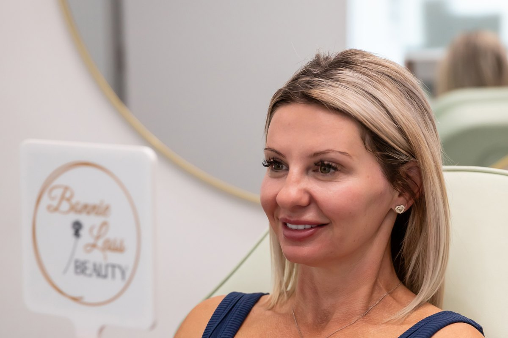

After the weight comes off
The weight came off, and people started asking if you were unwell. Nobody told you the face goes first.
Take the free skin assessmentThe face carries discrete fat pads that give it structure - the cheeks, the temples, the area under the eyes. When you lose weight quickly, those go early. The result is a face that reads as gaunt or hollow rather than lean, and a jawline that has softened rather than sharpened.
Skin has a finite ability to retract, and that ability falls with age and with the speed of the loss. Lose a significant amount quickly - and the current generation of weight-loss medications makes that far more common - and the skin is left with more surface area than it has structure to fill. That is laxity, and it is not a moral failing or something you can exercise away.
The instinct is to fill the hollows. Done badly, that gives you a face that is full but still slack, which is the look everyone is afraid of. The face needs structure restored in the right places and the skin itself rebuilt - and those are two different jobs, done in an order.
Your nurse assesses the whole face rather than the hollow you have been staring at. Typically that means restoring structure where it was genuinely lost, and separately rebuilding collagen and skin quality so the skin has something to hold on to. The goal is that you read as well, not as filled.
What we would use
Which of these is right for you depends entirely on your face. That is what the assessment decides, and it is why our nurses will not quote you until they have assessed you.
A Korean skin innovation, delivered where it actually works.
$395 · 45 minutes Advanced Nurse TreatmentsFor skin that has gone slack rather than lined.
Consultation required Advanced Nurse TreatmentsPreserves the collagen you have and prompts your cells to make more.
Consultation required Advanced Nurse TreatmentsA lift, without surgery and without a general anaesthetic.
Consultation required Advanced Nurse TreatmentsPuts back the structure that went missing, in the places it actually went.
Consultation requiredEvery treatment is assessed individually. A consultation with a nurse is required before any procedure, and individual results vary.
The questions people actually ask
Usually yes, at least until you are close to stable. Treating a face that is still changing means chasing a moving target. Come in for the free assessment anyway - your nurse will tell you honestly when to start, and that conversation costs nothing.
That is the tabloid name for it, and yes. It is not specific to any one medication - it happens with any rapid, significant weight loss. What matters is that it is a known, treatable pattern rather than something wrong with you.
They should not. The aim of the treatment is that people say you look well or rested, not that they can identify what you had.
It depends entirely on your face, and our nurses will not quote you a number until they have assessed you. What we can tell you is the order we would do things in, and what you can leave until later.
Free · 60 seconds · No obligation
Take the free skin assessment. Five questions, and you will get back a straight read on what is driving the change and what would actually help - whether or not you ever book with us.